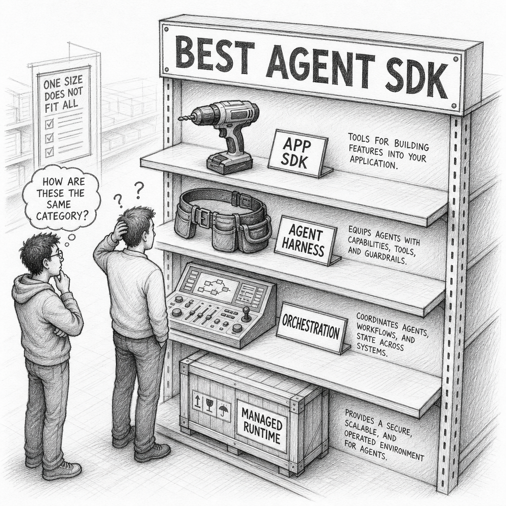
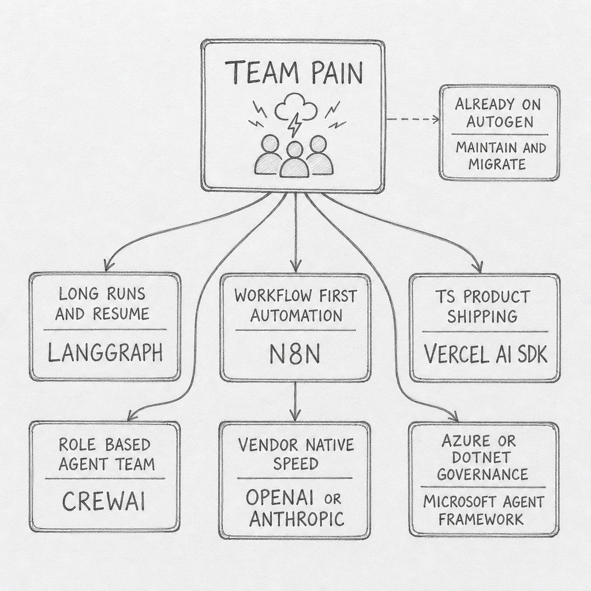

Choose an AI Agent Stack
Choose an AI Agent Stack
A team shipping a chat feature, a team building long-running research agents, and a team automating ticket workflows can all say they need an AI agent stack and mean different things.
That is why the comparison gets messy so quickly. The products grouped together under AI agent SDK span different layers: orchestration runtimes, vendor harnesses, app SDKs, managed runtimes, and workflow platforms such as n8n. Once those roles are separated, the market gets easier to read.
flowchart TD
H([" Layer View "])
style H fill:#455a64,color:#fff,stroke:#90a4ae,stroke-width:3px,font-weight:bold,font-size:18px
It is common to see LangGraph, Vercel AI SDK, n8n, CrewAI, Anthropic Agent SDK, OpenAI Agents SDK, Microsoft Agent Framework, and AutoGen placed into one comparison list. That is a reasonable starting point, but it hides an important difference: these products do not own the same part of the system.
Anthropic and OpenAI each span more than one layer. They offer raw model primitives, higher-level harness surfaces, and hosted runtimes. Vercel AI SDK is strongest when AI lives inside an application. LangGraph is strongest when the runtime itself must survive long, stateful work. n8n is different again: it is workflow-first, with an AI Agent node living inside an authored automation graph.
That confusion matters because it pushes teams into the wrong kind of complexity. A product team building a chat feature buys a graph runtime before it has a graph problem. A platform team that needs resumable background work buys an app SDK and discovers too late that UI ergonomics are not the same thing as durable execution. A team that wants the shortest path to a working internal agent adopts hosted vendor tools, then discovers that tracing, storage, and approvals have already pulled the architecture toward one vendor.

The strongest opinion in this post is simple: start with the layer, not the brand. LangGraph leads durable orchestration. Vercel AI SDK leads TypeScript app shipping. n8n leads workflow-first AI automation. OpenAI and Anthropic lead vendor-native integrated stacks. Microsoft Agent Framework is the future-facing Microsoft answer for that ecosystem.
AutoGen helps explain how the market got here. It helped define the first wave of open-source multi-agent frameworks by making agent-to-agent conversation, tool use, and human input easy to assemble. As of May 2026, Microsoft marks AutoGen as maintenance mode in the official repository and directs new users to Microsoft Agent Framework. Microsoft now describes Agent Framework as the direct successor to both AutoGen and Semantic Kernel.
flowchart TD
H([" Five Layers "])
style H fill:#455a64,color:#fff,stroke:#90a4ae,stroke-width:3px,font-weight:bold,font-size:18px
The cleanest way to read the market is as five core layers plus one adjacent category.
| Layer | What you get | Current examples | Hidden cost |
|---|---|---|---|
| Primitives | Raw model calls plus tool contracts | Anthropic Messages, OpenAI Responses | You own almost everything else |
| Agent harness SDKs | A reusable in-process loop with sessions, hooks, and approvals | Anthropic Agent SDK, OpenAI Agents SDK | The abstraction is still vendor-shaped |
| Orchestration runtimes | Explicit state, routing, persistence, and multi-step control | LangGraph, CrewAI, Microsoft Agent Framework, legacy AutoGen | More control means more operational surface |
| App / UI SDKs | Product-facing model abstraction and short tool loops | Vercel AI SDK | State and durability leak back into the app fast |
| Managed runtimes | Hosted agents, hosted tools, hosted state | Anthropic Managed Agents, OpenAI hosted agent features | Maximum convenience, maximum lock-in pressure |
| Adjacent workflow automation platforms | Workflow-first systems that embed AI steps inside a larger authored process | n8n | Workflow pause/resume is not the same thing as agent-session durability |
Underneath those layers, the work is less mysterious than the branding suggests. Every serious stack is packaging the same jobs: model calls, tool execution, the agent loop, state, memory, execution environments, guardrails, persistence, tracing, and handoffs. The useful question is not which product supports agents. They all do. The useful question is which of those jobs you want to own yourself and which ones you want the stack to own for you.
The table also explains why category-relative leadership matters more than universal rankings. Anthropic and OpenAI are easiest to read as vertical stacks that span primitives, harnesses, and hosted surfaces. Vercel AI SDK is strongest when AI is part of an application. LangGraph is strongest when the runtime must own long-lived state. n8n is strongest when the outer problem is already an automation workflow with approvals, waits, and integrations.
![Hand-drawn pencil schematic of a five-layer stack. From bottom to top: PRIMITIVES, AGENT HARNESS, ORCHESTRATION, APP SDK, MANAGED RUNTIME. Product labels are placed where they fit: Anthropic Messages and OpenAI Responses in PRIMITIVES; Anthropic Agent SDK and OpenAI Agents SDK in AGENT HARNESS; LangGraph, CrewAI, Microsoft Agent Framework, and AutoGen legacy in ORCHESTRATION; Vercel AI SDK in APP SDK; Anthropic Managed Agents and OpenAI hosted agent features in MANAGED RUNTIME. Clean black-and-white technical pencil style with clear labels.](images/five-layers-schematic.png)
The expensive mistake is owning the wrong layer. Product teams buy orchestration because it sounds serious, then spend months modeling flows and checkpoints they did not need. Platform teams stay too low for too long, then quietly rebuild their own runtime around retries, approvals, and state recovery. The wrong layer changes cost, speed, and failure modes.
That is also why adoption counts mislead when they are detached from workload. A broadly used app SDK does not become the default answer for durable agents. A widely deployed automation platform does not become the same thing as a first-class agent runtime. They are winning different jobs.
flowchart TD
H([" Runtime Line "])
style H fill:#455a64,color:#fff,stroke:#90a4ae,stroke-width:3px,font-weight:bold,font-size:18px
Layer is the main frame for the market. n8n adds a second useful lens: what does the system treat as the durable outer object when work pauses, resumes, or fails?
In n8n, that object is the workflow execution. The Wait node pauses workflow execution and reloads it later. Queue mode distributes workflow executions to workers. Execution history, retries, and debugging all attach to the workflow run. The AI Agent is real, but it still lives inside that outer workflow contract.
LangGraph and the clearer agent-loop-first SDKs flip that boundary. LangGraph persists checkpoints inside a thread and resumes the same graph state. OpenAI Agents separates session memory from paused run state, but both still belong to the agent runtime. Anthropic Agent SDK persists sessions for the local harness, while Managed Agents moves that session and environment boundary onto Anthropic's infrastructure.
| Question | Workflow first systems | Agent loop first systems |
|---|---|---|
| Outer runtime | Authored workflow graph | Agent run, session, or state graph |
| Durable unit | Workflow execution | Thread, session, checkpoint chain, or paused run |
| Recovery style | Resume the business process at a wait, retry, or queued step | Resume or replay the reasoning runtime with persisted state |
| Natural fit | Deterministic automation with bounded AI judgment | Open-ended, stateful, long-running agent work |
| Natural failure | Broken connector, bad branch data, approval path problem | Tool misuse, lost state, wrong checkpoint boundary, stalled handoff |
![Hand-drawn pencil schematic showing two main runtime patterns. The left side is WORKFLOW FIRST: Trigger flows through Branches, AI Agent Node, Wait or Approval, Integrations, Queue Worker, and Execution History, with a callout saying DURABLE UNIT = WORKFLOW EXECUTION. The right side is AGENT LOOP FIRST: Session or Thread State feeds an Agent Loop, which calls Tools, writes Checkpoints, resumes paused Runs, and hands work to Handoffs or Subagents, with a callout saying DURABLE UNIT = AGENT STATE OR RUN. A small note indicates HYBRIDS such as CREWAI FLOWS and MICROSOFT AGENT FRAMEWORK combine workflow and agent durability.](images/runtime-boundary-schematic.png)
That contrast is useful, but it is not perfect. CrewAI and Microsoft Agent Framework are hybrids. CrewAI pushes Flow-first production patterns while also exposing crew and agent checkpoints. Microsoft Agent Framework has both AgentSession and workflow checkpoints. Anthropic Managed Agents is a hosted runtime with its own session and environment boundary. The safe claim is not that n8n has no agent state. The safe claim is that n8n's primary durable control plane is workflow execution, not a first-class agent session.
That difference changes how teams debug failure. In n8n, the failure usually appears as a broken step in a visible business process. In agent-loop-first systems, the failure usually appears inside the reasoning runtime. That is why the two groups feel different in practice even when both are called agentic.
flowchart TD
H([" Choose By Pain "])
style H fill:#455a64,color:#fff,stroke:#90a4ae,stroke-width:3px,font-weight:bold,font-size:18px
The shortest useful buying guide is not feature-by-feature. It is pain-by-pain.
If the agent must survive long runs, pauses, retries, and human approvals, your real need is durable orchestration. That points to LangGraph first. Its value is not that it feels more advanced. Its value is that it treats state as a first-class object instead of a detail hidden inside a request loop.
If the agent mostly lives inside a product surface — chat, copilots, UI streaming, lightweight tool loops, provider switching — your real need is app shipping speed. That points to Vercel AI SDK first. Its weakness as a workflow engine is exactly why it is strong as a product SDK: it does not force a graph runtime on teams that are still shipping features, not control planes.
If the outer problem is already a workflow — scheduled jobs, approvals, CRM updates, ticket routing, webhook chains, and a dozen SaaS handoffs — your real need is workflow-first AI automation. That points to n8n. Its strength is that the process stays explicit. Its tradeoff is the same design choice: workflow execution is durable, but the agent is still embedded inside that workflow.
If the team wants the fastest path to a manager-and-specialists pattern, CrewAI remains attractive. It sells a human-readable mental model: researcher, writer, reviewer, planner. That abstraction is useful because it gives teams a bounded way to operationalize multi-agent collaboration. It is less useful when a team needs the clearest low-level runtime story.
If the goal is vendor-native speed, start with the vendor stacks and be honest about the trade. OpenAI and Anthropic are both compelling when the organization values short distance from idea to working agent. The trade is whether you are comfortable tying tools, state, tracing, approvals, and hosting choices to the same vendor whose model you are calling.

LANGGRAPH, WORKFLOW FIRST AUTOMATION -> N8N, TS PRODUCT SHIPPING -> VERCEL AI SDK, ROLE BASED AGENT TEAM -> CREWAI, VENDOR NATIVE SPEED -> OPENAI OR ANTHROPIC, and AZURE OR DOTNET GOVERNANCE -> MICROSOFT AGENT FRAMEWORK. A side note box says ALREADY ON AUTOGEN -> MAINTAIN AND MIGRATE.">If you're a TypeScript product team, start lower than your ambition. Use Vercel AI SDK unless you can already name the failure that requires durable orchestration.
If you need runs to survive interruption, start with LangGraph and accept the operational tax up front. That tax is the product.
If your business process is already a workflow, start with n8n. Use it when the agent is one reasoning step inside a larger automation, not when the agent loop itself needs to be the outer runtime.
If you want a high-level team metaphor, start with CrewAI, but do not confuse a good demo surface with the deepest durability story.
If you are all-in on Azure or .NET, start with Microsoft Agent Framework. Microsoft is telling you where its roadmap lives.
If you're evaluating OpenAI or Anthropic, ask a compliance question before a benchmark question. Hosted convenience usually wins the demo and complicates the audit.
If you're sitting on AutoGen, treat it as a migration planning problem, not a fresh strategic bet.
My own bias is conservative here. Most teams should buy the thinnest layer that solves today's failure mode, then move up only when the pain becomes structural. Premature orchestration is real. So is premature lock-in. The right stack is usually the one that removes the bottleneck you already have, not the one that advertises the most complete future.
The pattern is broader than agent tooling: once a market spans multiple layers and multiple durable objects, best stops being a useful ranking word. The real choice is not the smartest framework — it is whether state, tools, approvals, and recovery should belong to your workflow engine, your agent runtime, or your application.
References
- LangChain. "LangGraph Overview." docs.langchain.com/oss/python/langgraph/overview.
- LangChain. "Persistence." docs.langchain.com/oss/python/langgraph/persistence.
- Vercel. "AI SDK Documentation." ai-sdk.dev/docs.
- CrewAI. "Introduction." docs.crewai.com/en/introduction.
- CrewAI. "Flows." docs.crewai.com/en/concepts/flows.
- OpenAI. "Agents SDK." openai.github.io/openai-agents-python.
- OpenAI. "Sessions." openai.github.io/openai-agents-python/sessions.
- Anthropic. "Claude Code SDK Overview." docs.anthropic.com/en/docs/claude-code/sdk/sdk-overview.
- Anthropic. "Claude Code SDK Sessions." docs.anthropic.com/en/docs/claude-code/sdk/sessions.
- Anthropic. "Managed Agents Overview." docs.anthropic.com/en/managed-agents/overview.
- Microsoft. "Agent Framework Overview." learn.microsoft.com/en-us/agent-framework/overview.
- Microsoft Foundry Blog. "Microsoft Agent Framework reaches release candidate." devblogs.microsoft.com/foundry/microsoft-agent-framework-reaches-release-candidate.
- Microsoft Research. "AutoGen: Enabling Next-Gen LLM Applications via Multi-Agent Conversation Framework." microsoft.com/en-us/research/publication/autogen-enabling-next-gen-llm-applications-via-multi-agent-conversation-framework.
- Microsoft. "AutoGen." github.com/microsoft/autogen.
- n8n. "AI Agent." docs.n8n.io/integrations/builtin/cluster-nodes/root-nodes/n8n-nodes-langchain.agent.
- n8n. "Wait." docs.n8n.io/integrations/builtin/core-nodes/n8n-nodes-base.wait.
- n8n. "Queue mode." docs.n8n.io/hosting/scaling/queue-mode.